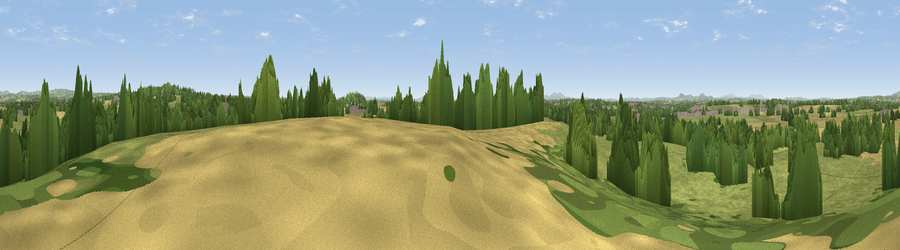

Viewpoint near Astwood
#26504 in England · top 55% of its area beats it · near AstwoodThe view, rendered

A 360° render of this exact spot computed from the terrain model, tree cover and land cover — summer colours, afternoon light, calibrated against photographs of famous viewpoints. Real trees, hedges and buildings will differ in detail.
The panorama
Grey silhouette: terrain skyline in each direction (720 bearings, Earth curvature and refraction included). Dashed green: skyline with trees (+15 m) and buildings (+8 m) as obstacles. Blue strip: how far the ground is visible on each bearing.
Where the view opens
Wedge length = distance to the farthest visible ground on that bearing (vegetation-aware). Rings at 10, 25 and 50 km.
What fills the view
57% grassland · 21% cropland · 19% woodland · 2% built-up
Angular shares of the visible panorama (visual magnitude), not map area. Landscape diversity 0.46 (0–1 Shannon).
Key numbers
More beautiful places nearby
The staircase of upgrades: each row has a higher view potential than everything closer. Driving times are estimates from straight-line distance, calibrated against real road routing — check an actual route before setting out.
| Place | Direction | Drive | Score |
|---|---|---|---|
| Viewpoint near Hanbury | ENE · 2 km | ~5 min | 57.1 |
| Viewpoint near Hanbury | SE · 3 km | ~7 min | 62.1 |
| Viewpoint near Inkberrow | SE · 10 km | ~19 min | 62.8 |
| Viewpoint near Littleworth | SSW · 13 km | ~24 min | 65.8 |
| Viewpoint near Cofton Hackett | NNE · 13 km | ~24 min | 66.2 |
| Holywell Hill | NNE · 14 km | ~25 min | 69.4 |
| Windmill Hill | NNE · 15 km | ~26 min | 73.2 |
| Viewpoint near Clent | N · 17 km | ~29 min | 74.3 |
52.27074, -2.09704 · source: screening · position refined by local search. Computed location — check access rights before visiting.